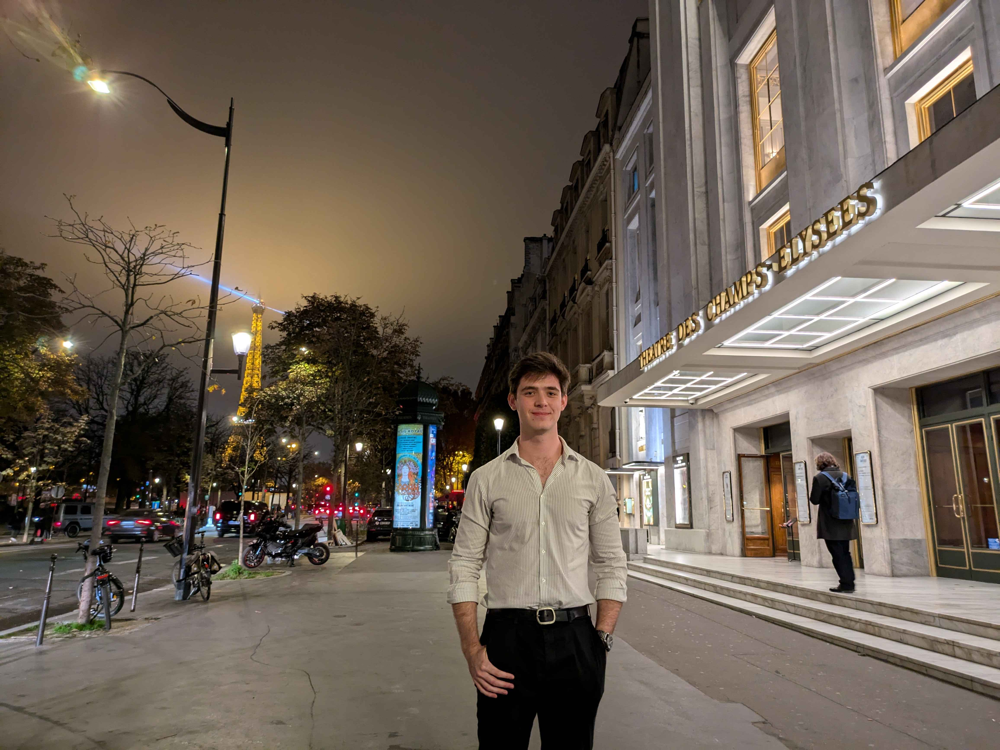

J'ai plusieurs intérêts en dehors de la philosophie et des sciences cognitives, dont certains rejoignent mes travaux académiques sur le sens supralinguistique.
Mon intérêt pour la mode s'accorde bien avec mes recherches sur la manière dont des éléments non linguistiques peuvent communiquer du sens. La mode est un domaine particulièrement riche à cet égard : les choix vestimentaires peuvent exprimer une identité, une position sociale et des valeurs esthétiques sans qu'un seul mot soit prononcé. En mars 2025, j'ai eu l'occasion de défiler à la Paris Fashion Week avec Duranimal (le défilé de Duran Lantink) et lors du dîner du Saut Hermès. Ces expériences m'ont permis de voir de près comment la mode peut agir comme médium communicatif.
Je suis chanteur basse de formation classique. Actuellement, j'étudie au Peabody Preparatory. Auparavant, j'ai suivi des cours de musique au Conservatoire d'Oberlin. Comme la mode, la musique offre une fenêtre sur le sens supralinguistique.
Quelques concerts notables auxquels j'ai participé :
Je pratique aussi quelques sports qui n'ont rien à voir avec le sens supralinguistique (autant que je sache). Je joue aux échecs, actuellement classé 1742 FIDE (blitz). À l'université, j'étais defensive end dans l'équipe de football américain d'Oberlin. Et au lycée, j'ai fait partie de l'équipe « varsity » de tennis.